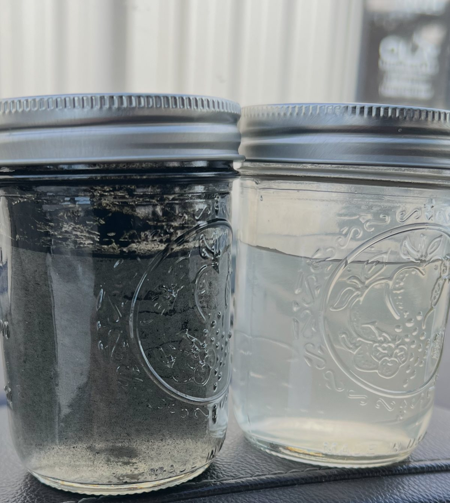

Not lab theory — field tests on the same high-solids, paraffin-laden water your wells handle every day.
The test ran on material skimmed off the top of an aboveground storage tank — thick, paraffin-loaded emulsion, and about the toughest fluid a strainer will ever see.
A single 50-micron unit removed all solidified paraffins, broke the emulsion, and never stopped flowing. Testing confirmed that a coarser pass ahead of it was unnecessary: filtering straight to 50 micron worked, and simply increased how often the strainer cleaned itself.
That is why 50 micron is where we start on the inlet side of a disposal well — one unit, no staging, no downtime.
Two jars pulled at a disposal site — inlet fluid on the left, filtered water on the right, out of the same line minutes apart.

Customer testimonials are being recorded now and will be published here as named, attributed quotes once the operators have approved them. We do not post anonymous or invented quotes.
If you want to talk to an operator who is running one, ask — we will connect you directly with a reference rather than hand you a paraphrase.
If it performs on skimmed AST sludge, it will perform on your inlet. Try it free for 60 days.
Start your trial →